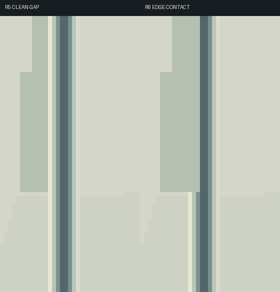
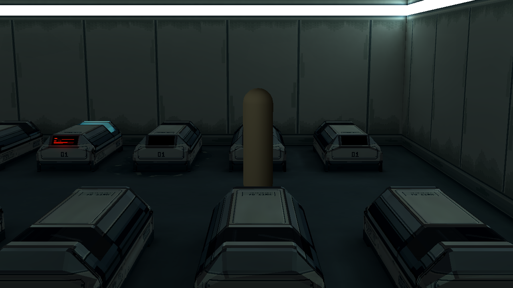
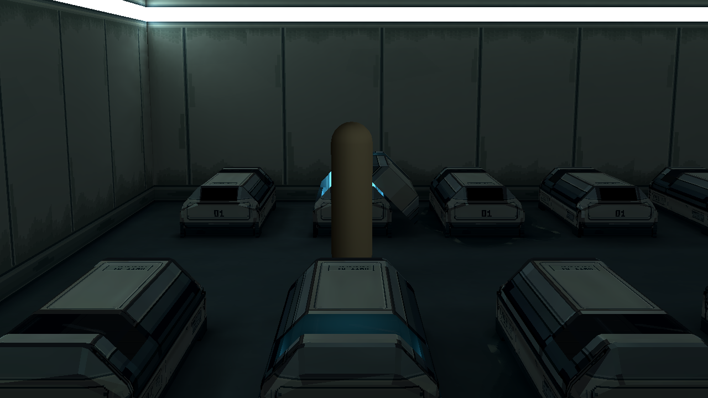
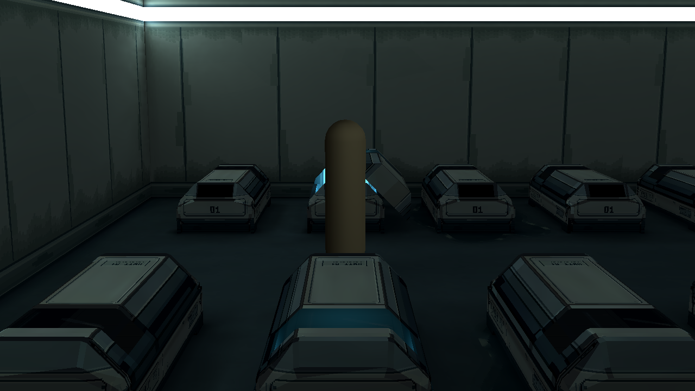
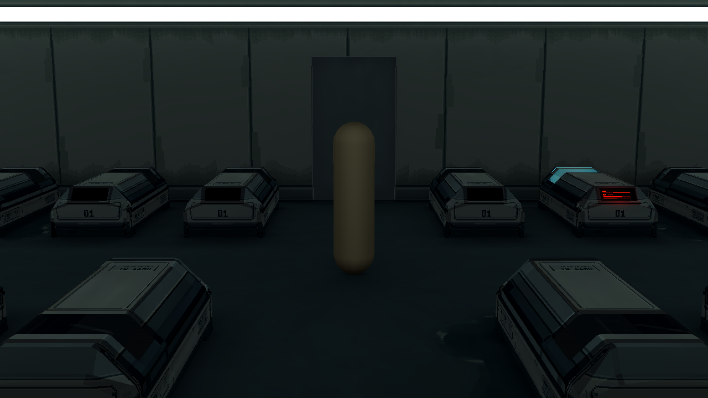
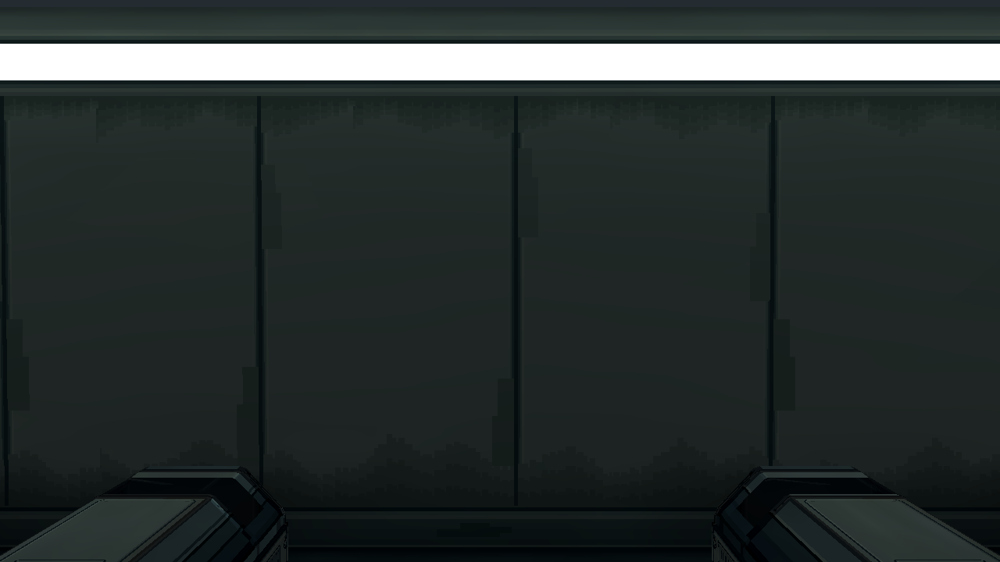
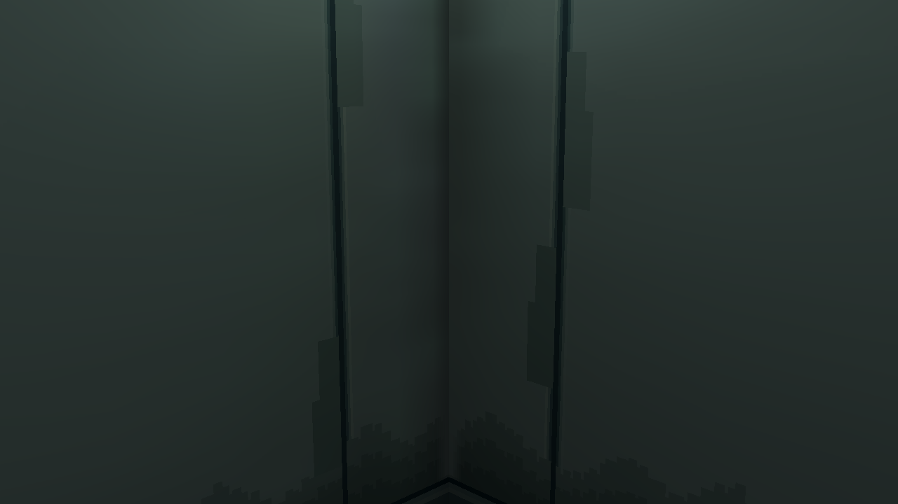
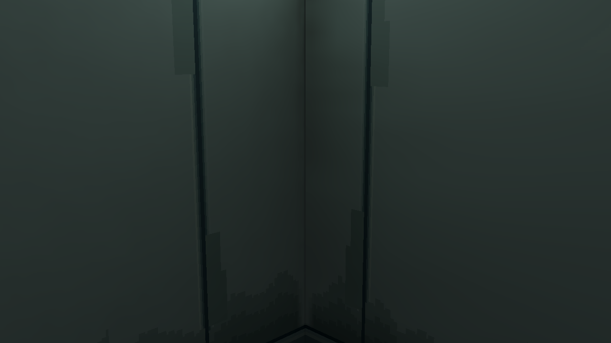

原因：旧图保护了整条8px接缝，连亮倒角也被清空旧化，形成干净隔离边。现只保护中央2px密封芯，旧化连接到相邻肩部。全室38条接缝统一处理；接缝以外像素、地坪、舱体、模型、UV和灯光保持。
制作与验证说明 · 逐像素检查 · 四墙分层Aseprite





前墙仅在技术图中临时解除剖切隐藏，拍后恢复；游戏截图保持原剖切。



正常游戏图不提亮，新固有色反射未重新烘焙。旧r5全部保留。